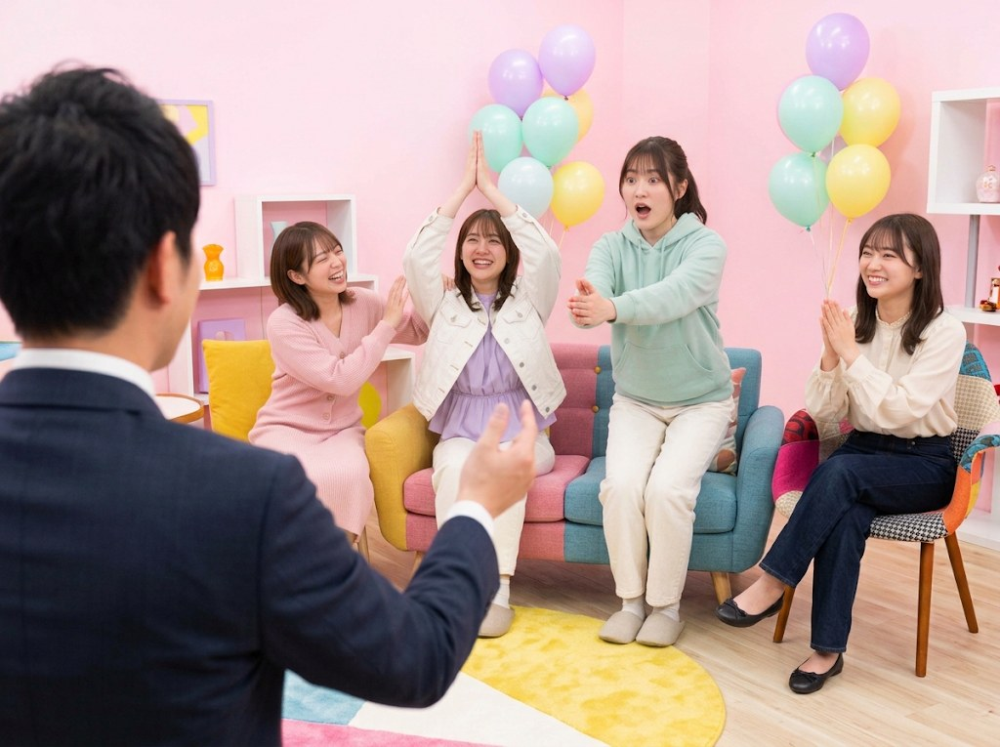

「わたしって、かかるの？」
プロの催眠術師の動画に出てくれるモニターさんを募集中。
ふだん1万円の体験が、今回は0円です。
11月の撮影枠 のこり5名
30秒で応募するLINEで質問だけでもOKそのかわりに、体験のようすを
YouTube の動画に出させてください。
あなたのリアルな反応が、いちばんの出演料です。
「離そう」とするほど離れない。いちばん人気の定番です。
知っているのに言えない。終わったあと、みんな笑っています。
最後は深いリラックスで終わります。「よく眠れた」の声も。
首から下だけ・スタンプで隠す、も選べます
使ってほしくない場面は、カットします
講座や商品のおすすめは一切ありません
友だちと2人での参加もOKです
催眠ってなに？をゆるく説明。こわくないことを先にお話しします。
かからなくても大丈夫。それも動画の大事なシーンです。
出したくない場面は、その場で伝えてください。
ぜんぶで 60 分・手ぶらでOK
正直ぜったいかからないと思ってたのに、手が本当に離れなくて笑いすぎました。
22歳・学生顔出しなしで出られたので安心。動画も公開前に見せてもらえました。
26歳・会社員友だちと2人で参加。帰り道ずっとその話で盛り上がりました。
29歳・看護師何も問題ありません。「かからなかった」も、そのまま動画になります。
体験の内容は先にすべてお伝えします。いやなものは断れます。
ありません。交通費だけ、ご自身でお願いしています。
答えは、体験した人だけのおたのしみ。
11月の撮影枠 のこり5名
30秒で応募するLINEで質問だけでもOK